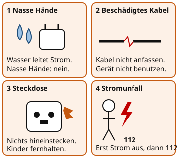

Sicherheit im Umgang mit Strom
Warum ist das wichtig?
In der Steckdose zu Hause liegen 230 V. Das ist viel mehr, als eine Batterie liefert, und kann lebensgefährlich sein. Viele Unfälle passieren nicht im Physikraum, sondern im Alltag: mit nassen Händen, mit einem beschädigten Kabel oder mit einem Gegenstand in der Steckdose.
Das steckt dahinter

Jede dieser Situationen kann gefährlich werden. Überlege bei jeder, welche Regel verletzt wird.
Quelle: eigene Zeichnung. Lizenz: CC-BY-4.0.Diese Regeln schützen dich:
- Fasse elektrische Geräte und Stecker nicht mit nassen Händen an.
- Benutze keine Kabel oder Stecker mit beschädigter Isolierung.
- Stecke nur Stecker in eine Steckdose, keine anderen Gegenstände.
- Halte Wasser von elektrischen Geräten fern.
- Schalte ein Gerät aus, bevor du es reinigst oder reparierst.
- Sicherung
Eine Sicherung unterbricht den Stromkreis, wenn die Stromstärke zu groß wird. So verhindert sie, dass Kabel zu heiß werden und Feuer fangen.
Ein Beispiel
Das beschädigte Kabel
Du willst dein Handy aufladen und siehst, dass die Ummantelung des Ladekabels eingerissen ist. Das Kupfer liegt frei. Benutze das Kabel nicht. Ziehe den Stecker aus der Steckdose, ohne das Kabel an der schadhaften Stelle anzufassen, und sag einem Erwachsenen Bescheid.
Bei einem Stromunfall gilt: Erst den Strom unterbrechen (Schalter aus oder Stecker ziehen), dann den Notruf 112 wählen. Berühre die verletzte Person nicht, solange sie noch unter Spannung stehen könnte.
Übung
Übung
Lösung
Mit nassen Händen einen Stecker in die Steckdose stecken. richtige Antwort
Wasser leitet Strom. Mit nassen Händen kann der Strom durch deinen Körper fließen.
Ein Ladekabel mit eingerissener Ummantelung benutzen. richtige Antwort
Liegt das Kupfer frei, kannst du es berühren und einen Stromschlag bekommen.
Einen Metallgegenstand in die Steckdose stecken. richtige Antwort
Metall leitet Strom. Die Steckdose führt 230 V, das ist lebensgefährlich.
Einen Stecker mit trockenen Händen an der isolierten Grifffläche einstecken.
Ein heiler Stecker mit trockenen Händen ist die normale, sichere Benutzung.
Nasse Hände, beschädigte Kabel und Metall in der Steckdose sind gefährlich. Ein heiler Stecker mit trockenen Händen ist in Ordnung.
Mehr dazu:
Übung
Lösung
Richtige Antwort: Die Aussage stimmt nicht.
Solange die Person unter Spannung stehen könnte, darfst du sie nicht berühren. Unterbrich zuerst den Strom, zum Beispiel mit dem Schalter oder indem du den Stecker ziehst.
Mehr dazu:
Übung
Lösung
Richtige Antwort: 1. Strom unterbrechen, zum Beispiel mit dem Schalter oder indem du den Stecker ziehst., 2. Den Notruf 112 wählen., 3. Erste Hilfe leisten, wenn die Person sicher ist.
Zuerst muss der Strom unterbrochen werden, sonst kannst du selbst einen Schlag bekommen. Danach kommt der Notruf, dann die Hilfe.
Mehr dazu: